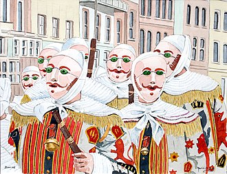

Le carnaval de Binche est un des plus anciens folklores de Belgique. Il a été reconnu en 2003, par l'UNESCO comme chef-d'œuvre du patrimoine oral et immatériel de l'humanité. Il est repris parmi les chefs-d’œuvre du Patrimoine oral et immatériel de la Fédération Wallonie-Bruxelles depuis 2004 et a été élevé au rang d’officier du Mérite wallon, le 23 février 2017.

Les festivités se déroulent en deux parties : le carnaval proprement dit et l'avant-carnaval, temps des « soumonces ». Le carnaval commence 49 jours avant Pâques et les soumonces six semaines avant les trois « jours gras ».
Le carnaval « de type binchois » se célèbre dans toute la Région du Centre, mais c'est à Binche qu'il demeure le plus codifié et le plus traditionnel. Les personnages principaux en sont les Gilles, qui dansent au son des 26 airs traditionnels du carnaval, sons qui sont joués par une batterie constituée de tambours (en général, on compte sept tamboureurs par batterie) et d'une grosse caisse (parfois deux dans d'autres villes). La batterie est accompagnée par un orchestre de cuivres (trompettes, bugles, trombones, tubas et sousaphones).